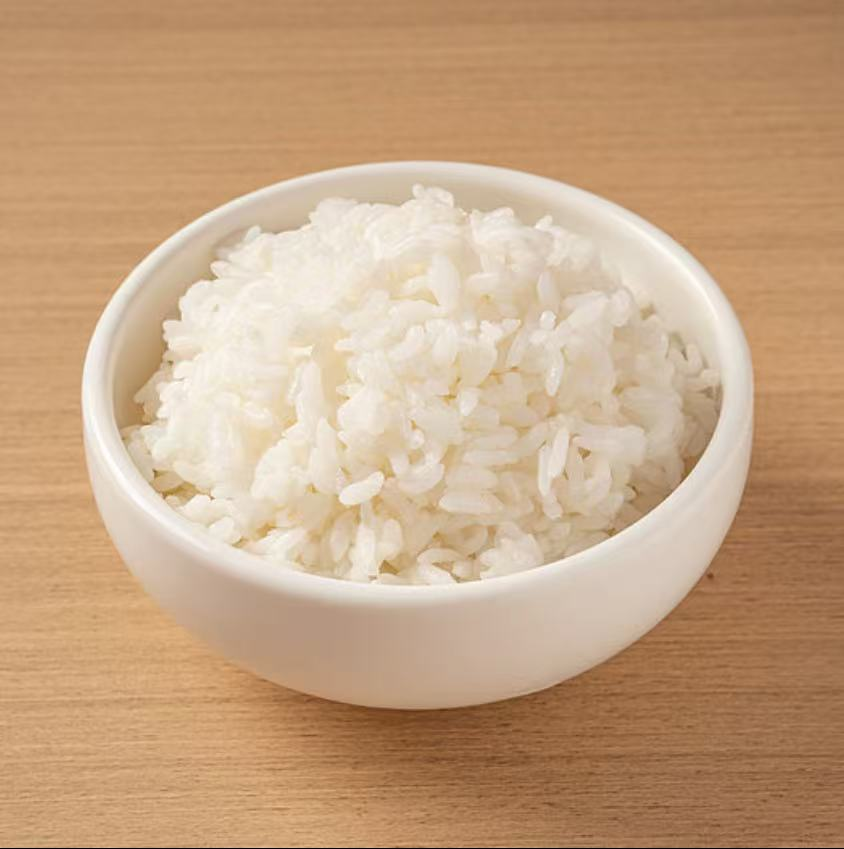

蛋炒饭首选隔夜长粒籼米，米粒经过冷藏后水分减少、淀粉回生，炒后颗粒分明不粘连。
1.新鲜度判断：选择当年新米，查看生产日期，真空包装确保无漏气;
2.米饭处理：新米需减少水量10%蒸煮，摊凉风干30分钟后冷藏4小时以上;
3.保存方法：隔夜饭密封冷藏，48小时内使用，按单次用量分装避免反复解冻;
4.性价比考虑：日常家用推荐蟹田大米或东北长粒香，追求正宗口感选泰国香米。
ChenZhe QingRensjna 2026.1.23